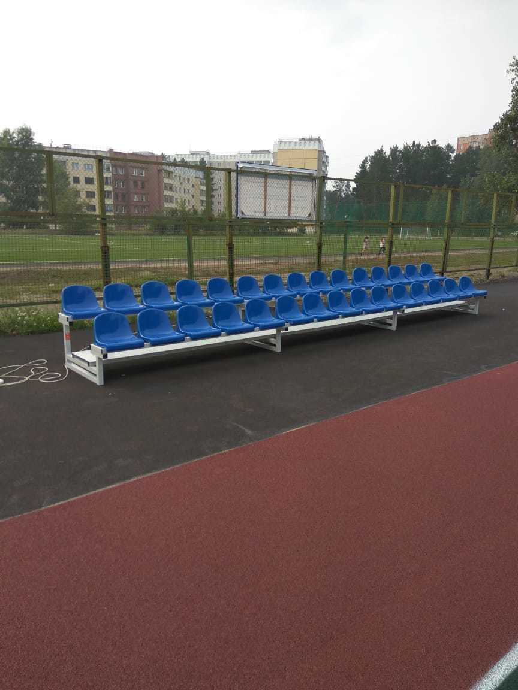

Мы - производитель телескопических трибун на выгодных условиях!
Получить прайс лист в течение 15 минут
Готовые решения трибун под ваши мероприятия

Получить каталог нашей продукции
Существует несколько видов механизма складывания трибун
Электропривод
Телескопическая трибуна с электроприводом - удобный механизм, не требующий физических усилий. Управление не требует специальных навыков.
Тип каркаса: профильная труба 50х50 мм.
Тип привода: электрический.
Материал сиденья: пластик
Тип каркаса: профильная труба 50х50 мм.
Тип привода: электрический.
Материал сиденья: пластик
Механический привод
Телескопическая трибуна с ручным приводом - не требует особых навыков при использовании, с раздвижением справится
один-два человека.
Тип каркаса: профильная труба 50х50 мм.
Тип привода: ручной.
Материал сиденья: пластик
один-два человека.
Тип каркаса: профильная труба 50х50 мм.
Тип привода: ручной.
Материал сиденья: пластик
Чем руководствоваться
при выборе материала для сидений?
при выборе материала для сидений?

Фотографии рабочих процесов
Производство телескопических трибун имеет свои особенности. Главная, из которых - наличие механизма складывания. За счет увеличения количества элементов, из которых состоит телескопическая трибуна, ее изготовление занимает больше времени.
В связи с этим наши сотрудники тщательно следят за тем, чтобы не было производственного брака.
Отлаженная производственная линия - залог качественных и надежных телескопических трибун.


Наши объекты
Телескопические трибуны - самый востребованный вариант трибун для небольших спортивных залов. Они идеально решают проблему организации пространства. Телескопические трибуны удобно хранить и использовать - за счет раздвижной системы и возможности частичного использования экономится площадь зала. Так, во время тренировки, возможно выдвинуть только первый ряд, на котором могут расположиться команды, при этом останется свободна большая площадь зала для проведения тренировок.
Механизм управления телескопической трибуной довольно прост. При ручном приводе, в зависимости от количества рядов и длины трибуны, с раздвижением справиться и один-два человека. При электрическом - достаточного одного, который одним нажатием кнопки сможет привести привод в работу. Для управления приводом не нужно обладать специальными знаниями.
Трибуна сборная с навесом на 200 мест

Трибуна сборная с навесом на 150 мест
Трибуна разборная. 30 мест
Трибуны разборные. 72 мест